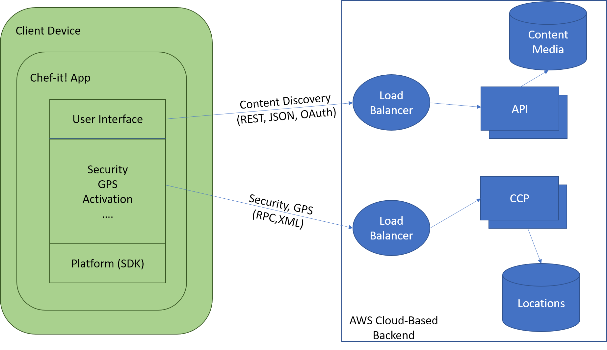
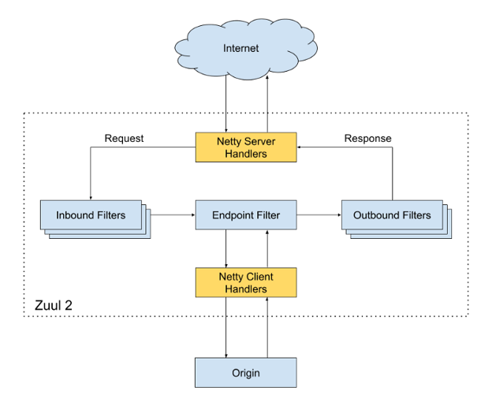
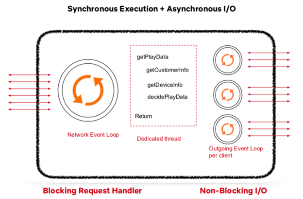
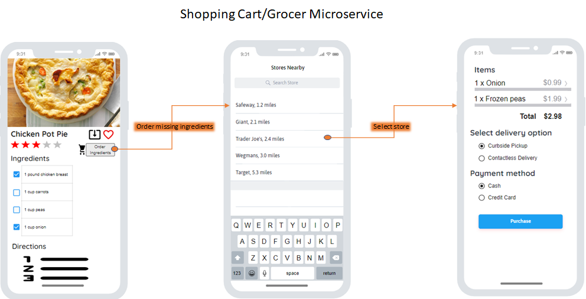

Our application will utilize the basic components of a web application. Chef-It! will operate based on Amazon Web Services (AWS). The software architecture of Chef-It! will consist of two main parts: Client and Backend.
The Client is any device running the application. These devices will include, at minimum, supported browsers running on a computer (laptop or desktop) or the Chef-It! App on smartphones or tablets. The team at Chef-It! will develop their own iOS and Android apps. In doing so, the team at Chef-It! will be able to control the app and other devices through the SDK for the following reasons:
Chef-It! has a requirement to be responsive, fast, and highly available. Chef-It! will control its performance via the software development kit (SDK). Figure C-1 illustrates a typical client structure.
Figure C-1. Example of system path/logic per client connection type.
Client Apps will separate connections to the backend into 2 categories: content discovery and grocery tracking. The content discovery will provide data to display on the UI including recipes, user information, ingredients, and videos. The grocery tracking will utilize built-in GPS on most smartphones and geo-location services on other clients to provide constant polling to the Chef-It! Control Plane (CCP) to constantly update a user’s location to find grocery stores nearby,access their APIs,and find deals/pickup services.
The backend of our system comprises almost everything including services, databases, and storages and will run entirely on AWS cloud. Some components of the Backend include:
Figure BA-1. The Chef-It! Backend Architecture.
Chef-It! will design the API Gateway service while utilizing Netflix’s open source Zuul [5] implementation. Zuul’s software was chosen primarily for its resiliency and scalability capabilities. If there is a need to increase service availability, this component can easily be deployed to EC2 instances across different regions.The API Gateway service resolves all requests from clients by communicating with the AWS External Load Balancers.
Figure BA-2. Overview of Zuul: The API Gateway Service.
Initially, the request gets routed to the Netty Server Handlers which are responsible for handling the network protocol, web server, and proxying work. This abstraction leaves the majority of heavy lift to the filters. The request is sent to the inbound filters which can be used for authentication, routing and manipulating the request. Next, the request is sent to an endpoint filter which can return a static response or route the request to the appropriate Application API in the backend. Lastly, before a response is sent, it gets decorated by the Outbound filters which also track metrics such as error rates, return codes, etc. These metrics will be monitored by the Chef-It! Team for continuous improvement and anomaly detection. Zuul is also able to discover new Application API by integrating with our service discovery module. This will allow for onboarding new application APIs, load tests, and service rerouting seamlessly, without impact to uptime or customers.
The application API is directly tied to Chef-It!’s core business functionalities. It serves as the orchestration layer to the other microservices. The API will follow the RESTful API [6] format to increase compatibility and reusability, as it is the architectural standard for web-based applications. The API proves the logic of converting a request to a composition of calls to the underlying microservices in correct order. While conducting these calls, the Application API can obtain additional data from other data stores to construct the appropriate responses. Chef-It!’s Application API is comprised of 8 categories:
The Application API component must be able to accept and process large columns of requests and construct appropriate responses. Our Architecture will utilize concepts from both synchronous and asynchronous execution calls.
Figure BA-3. Execution methodology to handle large volumes of requests.
The input and outputs (I/O) will be asynchronous, with the inputs being the requests from the API gateway Service. Each request will then get placed into the Network event loop for processing. Rather than having independents threads (async execution), we will utilize a synchronous exception call stack and thread handler to block each request to run certain commands such as getDeviceInfo, get Customer Info, etc. before going to a non blocking output known as the Outgoing Event Loop. This loop will call the appropriate microservices and once complete, the dedicated thread would construct the corresponding response.
Figure BA-4. Overview of Microservice Implementation
A microservice can function as an independent module or can call other microservices via REST. Figure BA-4, illustrates the structural component of a microservice. The implementation of the microservices can utilize the Network event loop to obtain requests and results from other microservices. While each microservice can utilize its own datastore, it can store recent and/or heavily used queries or results into an in-memory cache.
Figure BA-5. UI/UX of grocer microservice